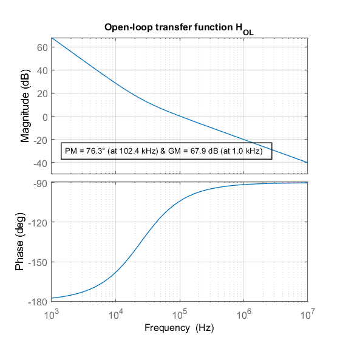
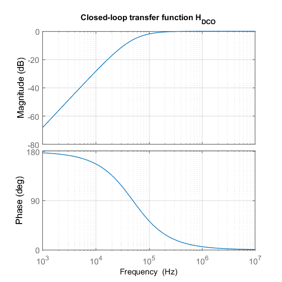
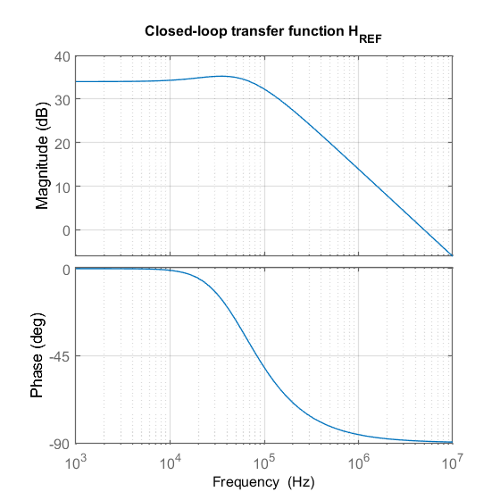
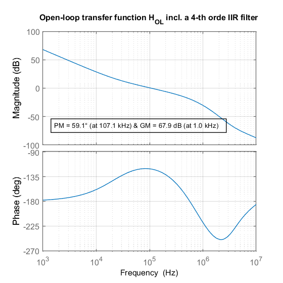
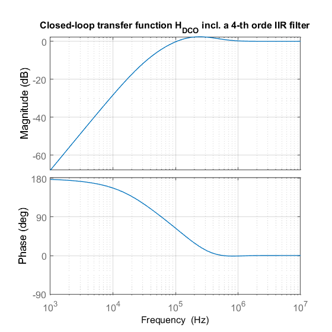
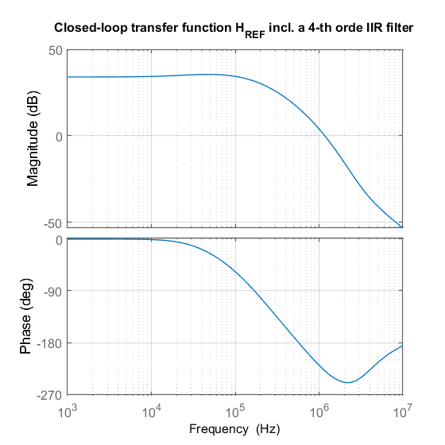
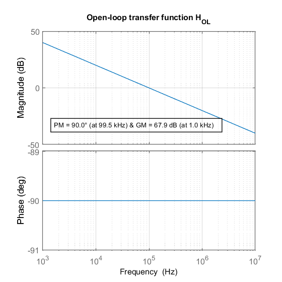
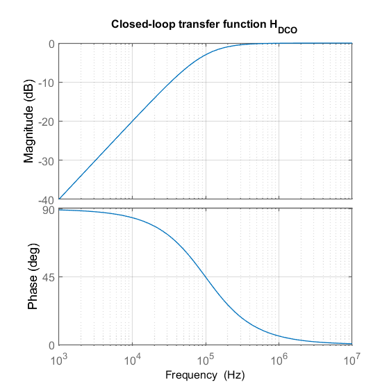
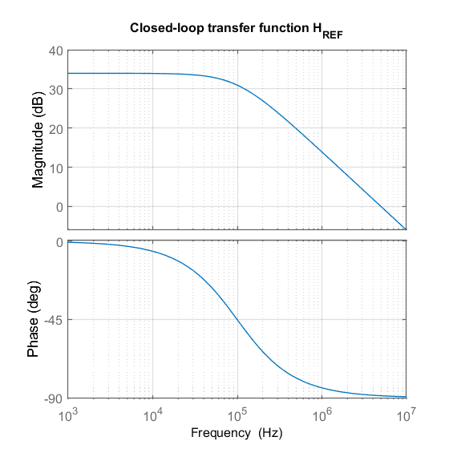

Homework 2 - Type-II ADPLL simulation in s-domain
Name: Ossama El Boustani
Student ID: 4542274
Contents
Set up graphic properties
clear all; close all; clc;
opts = bodeoptions('cstprefs');
opts.FreqUnits = 'Hz';
opts.Grid = 'on';
opts.Title.FontSize = 12;
opts.XLabel.FontSize = 12;
opts.YLabel.FontSize = 12;
opts.TickLabel.FontSize = 12;
Part 1
f_r = 40e6;
N = 50;
alpha = 2^(-6);
rho = 2^(-14);
omega_n = sqrt(rho) * f_r;
zeta = alpha/2/sqrt(rho);
numerator = [2*zeta*omega_n, omega_n^2];
denominator = [1, 0, 0];
Hol_2_2 = tf(numerator,denominator);
numerator = [1, 0, 0];
denominator = [1, 2*zeta*omega_n, omega_n^2];
Hdco_2_2 = tf(numerator,denominator);
numerator = [2*zeta*omega_n, omega_n^2];
denominator = [1, 2*zeta*omega_n, omega_n^2];
Href_2_2 = N*tf(numerator,denominator);
frequency = {2*pi*1e3,2*pi*10e6};
figure(1)
bodeplot(Hol_2_2, frequency, opts)
title('Open-loop transfer function H_{OL}')
[mag,ang] = bode(Hol_2_2);
[Gm,Pm,wcg,wcp] = margin(Hol_2_2); Gm = 67.9; wcg = 1e3;
str_pm = sprintf('PM = %.1f° (at %.1f kHz)',Pm,wcp/2/pi*1e-3);
str_gm = sprintf(' & GM = %.1f dB (at %.1f kHz)',Gm,wcg*1e-3);
str = strcat(str_pm,str_gm);
dim = [0.18 0.28 0.3 0.3];
annotation('TextBox',dim,'String',str,'FitBoxToText','on');
saveplot('Open-Loop-2-2')
figure(2)
bodeplot(Hdco_2_2, frequency, opts)
title('Closed-loop transfer function H_{DCO}')
saveplot('Closed-Loop-DCO-2-2')
figure(3)
bodeplot(Href_2_2, frequency, opts)
title('Closed-loop transfer function H_{REF}')
saveplot('Closed-Loop-REF-2-2')
Figure is saved to already existing directory 'figures'.
Figure is saved to already existing directory 'figures'.
Figure is saved to already existing directory 'figures'.
  
Part 2
H_1 = tf(1, [1,0]);
lambda = [2^-2, 2^-2, 2^-3, 2^-3];
numerator = [1, f_r];
denominator_1 = [1 / lambda(1), f_r];
denominator_2 = [1 / lambda(2), f_r];
denominator_3 = [1 / lambda(3), f_r];
denominator_4 = [1 / lambda(4), f_r];
H1 = tf(numerator, denominator_1);
H2 = tf(numerator, denominator_2);
H3 = tf(numerator, denominator_3);
H4 = tf(numerator, denominator_4);
H_IIR = H1*H2*H3*H4;
Hol_2_4 = ((alpha * H_IIR) + (rho * f_r * H_1)) * f_r * H_1;
Hdco_2_4 = 1 / ( 1+ Hol_2_4);
Href_2_4 = N * (Hol_2_4 / (1 + Hol_2_4));
figure(4)
bodeplot(Hol_2_4, frequency, opts)
[mag,ang] = bode(Hol_2_4);
[Gm,Pm,wcg,wcp] = margin(Hol_2_4); Gm = 67.9; wcg = 1e3;
str_pm = sprintf('PM = %.1f° (at %.1f kHz)',Pm,wcp/2/pi*1e-3);
str_gm = sprintf(' & GM = %.1f dB (at %.1f kHz)',Gm,wcg*1e-3);
str = strcat(str_pm,str_gm);
dim = [0.18 0.28 0.3 0.3];
annotation('TextBox',dim,'String',str,'FitBoxToText','on');
title('Open-loop transfer function H_{OL} incl. a 4-th orde IIR filter')
saveplot('Open-Loop-2-2-IIR')
figure(5)
bodeplot(Hdco_2_4, frequency, opts)
title('Closed-loop transfer function H_{DCO} incl. a 4-th orde IIR filter')
saveplot('Closed-Loop-DCO-2-2-IIR')
figure(6)
bodeplot(Href_2_4, frequency, opts)
title('Closed-loop transfer function H_{REF} incl. a 4-th orde IIR filter')
saveplot('Closed-Loop-REF-2-2-IIR')
Figure is saved to already existing directory 'figures'.
Figure is saved to already existing directory 'figures'.
Figure is saved to already existing directory 'figures'.
  
Part 3
numerator = [alpha*f_r];
denominator = [1,0];
Hol_1 = tf(numerator,denominator);
Hdco_1 = 1/(1+ Hol_1);
Href_1 = N*(Hol_1/(1+Hol_1));
figure(7)
bodeplot(Hol_1, frequency, opts)
[mag,ang] = bode(Hol_1);
[Gm,Pm,wcg,wcp] = margin(Hol_1); Gm = 67.9; wcg = 1e3;
str_pm = sprintf('PM = %.1f° (at %.1f kHz)',Pm,wcp/2/pi*1e-3);
str_gm = sprintf(' & GM = %.1f dB (at %.1f kHz)',Gm,wcg*1e-3);
str = strcat(str_pm,str_gm);
dim = [0.18 0.28 0.3 0.3];
annotation('TextBox',dim,'String',str,'FitBoxToText','on');
title('Open-loop transfer function H_{OL}')
saveplot('Open-Loop-1')
figure(8)
bodeplot(Hdco_1, frequency, opts)
title('Closed-loop transfer function H_{DCO}')
saveplot('Closed-Loop-DCO-1')
figure(9)
bodeplot(Href_1, frequency, opts)
title('Closed-loop transfer function H_{REF}')
saveplot('Closed-Loop-REF-1')
Figure is saved to already existing directory 'figures'.
Figure is saved to already existing directory 'figures'.
Figure is saved to already existing directory 'figures'.
  